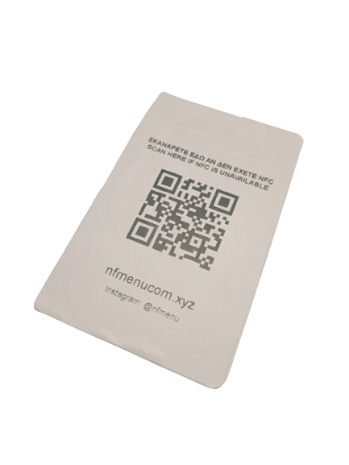
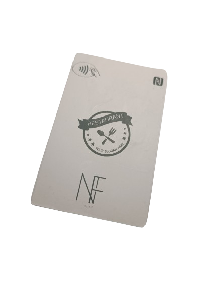

Το NF Menu προσφέρει εξατομικευμένα NFC μενού για το εστιατόριο,
καφέ ή την ταβέρνα σας! Ο πελάτης ακουμπά τη κάρτα στο κινητό του και το μενού ανοίγει αυτόματα!
H κάρτα αυτή έχει περίπου το μέγεθος μίας πιστωτικής κάρτας.
Τι διαφορά έχει το NFMenu από ενα QR code?

Με τη χρήση του NF Menu, δηλαδή της κάρτας NFC, η διαδικασία ανοίγματος του μενού είναι απλούστερη.
Συγκεκριμένα:
- Είναι ευκολότερη η προβολή των μενού, καθώς δε χρειάζονται εφαρμογές / σαρωτές.
- Οι αλλαγές στα μενού γίνονται εύκολα και απλά με ένα απλό e-mail στην NF
- Η σελίδα που ανοίγουν τα μενού αναλαμβάνεται από εμάς
- Η σελίδα έχει link που φέρνει τον επισκέπτη σε μενού της αγγλικής γλώσσας.
- Τα QR Code επίσης, με τον καιρό φθείρονται και φτάνουν σε σημείο που δεν λειτουργούν. Η κάρτα NF Menu έχει μεγαλύτερη αντοχή.
- Η σελίδα έχει επίσης σύνδεσμο ο οποίος ανακατευθύνει τον πελάτη σε πληροφορίες για το κατάστημά σας και ξανά πίσω.